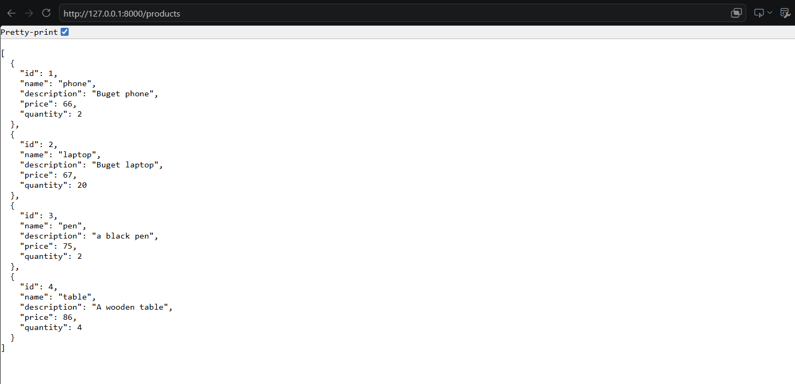
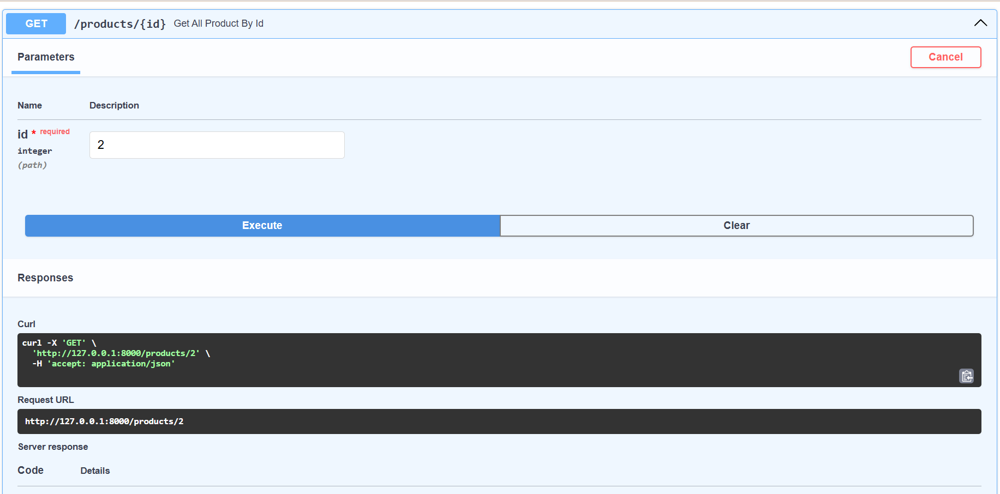
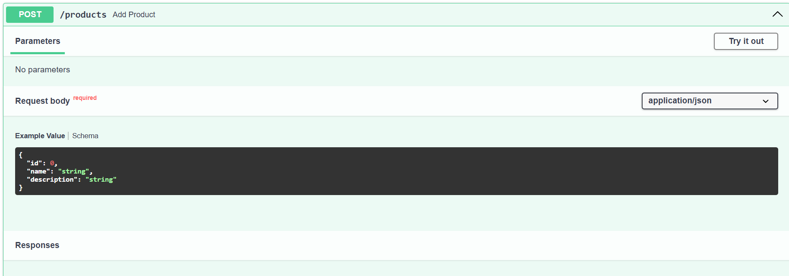
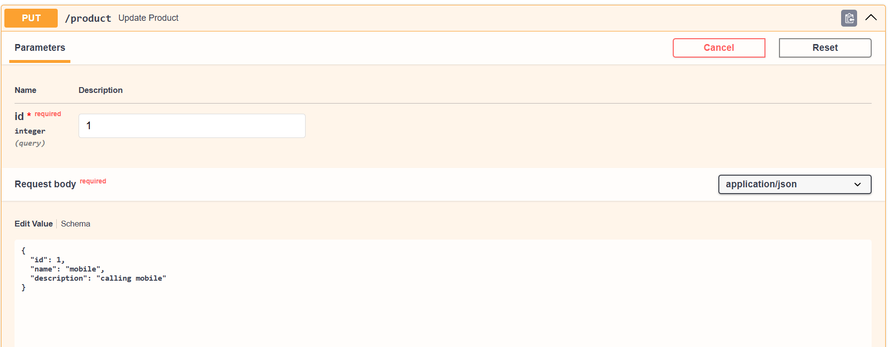
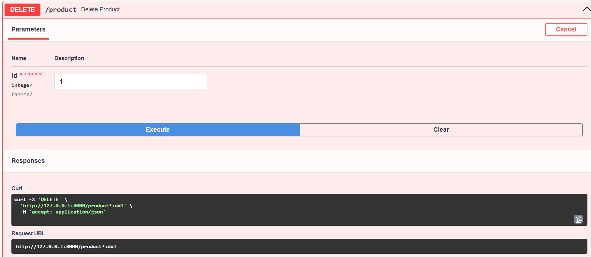

Routing
Create a products
mysite/main.py
from models import Product
products=[
Product(id=1,name="phone",description="Buget phone"),
Product(id=2,name="laptop",description="Buget laptop"),
Product(id=3,name="pen",description="a black pen"),
Product(id=4,name="table",description="A wooden table"),
]
@app.get("/products")
def get_all_products():
return products
mysite/models.py
from pydantic import BaseModel
class Product(BaseModel):
id:int
name:str
description:str
price:float
quantity:int
Run:
Terminal
uvicorn main:app --reload
url
http://127.0.0.1:8000/products
Output

1.GET Request
mysite/main.py
.....
@app.get("/products/{id}")
def get_all_product_by_id(id:int):
for product in products:
if product.id==id:
return product
return "not found"
Output

2.POST Request
mysite/main.py
.....
@app.post("/products")
def add_product(product:Product):
products.append(product)
return product
Output

3.PUT Request
mysite/main.py
.....
@app.put("/product")
def update_product(id: int, product: Product):
for i in range(len(products)):
if products[i].id == id:
products[i] = product
return "Product Updated Successfully"
Output

5.Delete Request
mysite/main.py
.....
@app.delete("/product")
def delete_product(id: int):
for i in range(len(products)):
if products[i].id == id:
del products[i]
return "Product Deleted Successfully"
return "Product not found"
Output

Path Parameters
mysite/main.py
.....
@app.get("/product/{id}")
def get_product(id: int):
return {"Product ID": id}
URL
url
GET /product/1
Quary Parameters
mysite/main.py
.....
@app.get("/search")
def search_product(name: str, price: int):
return {
"name": name,
"price": price
}
URL
url
GET /search?name=Laptop&price=50000
Request Headers
mysite/main.py
.....
@app.get("/headers")
def read_headers(user_agent: str = Header(None)):
return {"User-Agent": user_agent}
URL
url
GET /headers
User-Agent: Mozilla/5.0